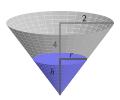

¿Qué comportamiento de una función hace que su gráfica sea una línea recta?
Para una función cuya gráfica es una línea recta, ¿qué estructura tiene su fórmula?
¿Cómo podemos interpretar la pendiente de una función lineal en contextos aplicados?
Las funciones cuyas gráficas son líneas rectas son tanto las más simples como las más importantes en matemáticas. Las líneas a menudo modelan fenómenos importantes, y aun cuando no modelen directamente fenómenos, las líneas a menudo pueden aproximar otras funciones que sí lo hacen. Si la gráfica de una función es una línea recta o no, está directamente relacionado con su tasa de cambio promedio.
Preview Activity1.4.1.
Sea \(y = f(x) = 7 - 3x\text{.}\) Determina \(AV_{[-3,-1]}\text{,}\)\(AV_{[2,5]}\text{,}\) y \(AV_{[4,10]}\) para la función \(f\text{.}\)
Sea \(y = g(x)\) dado por los datos en Table 1.4.1.
Table1.4.1.Una tabla que define la función \(y = g(x)\text{.}\)
\(x\)
\(-5\)
\(-4\)
\(-3\)
\(-2\)
\(-1\)
\(0\)
\(1\)
\(2\)
\(3\)
\(4\)
\(5\)
\(g(x)\)
\(-2.75\)
\(-2.25\)
\(-1.75\)
\(-1.25\)
\(-0.75\)
\(-0.25\)
\(0.25\)
\(0.75\)
\(1.25\)
\(1.75\)
\(2.25\)
Determina \(AV_{[-5,-2]}\text{,}\)\(AV_{[-1,1]}\text{,}\) y \(AV_{[0,4]}\) para la función \(g\text{.}\)
Considera la función \(y = h(x)\) definida por la gráfica en Figure 1.4.2.
Figure1.4.2.La gráfica de \(y = h(x)\text{.}\)
Determina \(AV_{[-5,-2]}\text{,}\)\(AV_{[-1,1]}\text{,}\) y \(AV_{[0,4]}\) para la función \(h\text{.}\)
¿Qué tienen en común los tres ejemplos anteriores? ¿En qué se diferencian?
Para la función \(y = f(x) = 7 - 3x\) de (a), encuentra la expresión más simple que puedas para
Subsection1.4.1Propiedades de las funciones lineales
En Preview Activity 1.4.1, consideramos tres funciones diferentes para las cuales la tasa de cambio promedio parecía ser siempre constante. Para la primera función en la actividad preliminar, \(y = f(x) = 7 - 3x\text{,}\) podemos calcular su tasa de cambio promedio en un intervalo arbitrario \([a,b]\text{.}\) Haciendo esto, notamos que
Este resultado nos muestra que para la función \(y = f(x) = 7 - 3x\text{,}\) su tasa de cambio promedio es siempre \(-3\text{,}\) sin importar el intervalo que elijamos. Usaremos la propiedad de tener una tasa de cambio constante como la propiedad definitoria de una función lineal.
Definition1.4.3.
Una función \(f\) es lineal siempre que su tasa de cambio promedio sea constante en cualquier elección de intervalo en su dominio 1
Aquí estamos considerando funciones cuyo dominio es el conjunto de todos los números reales.
. Es decir, para cualquier entrada \(a\) y \(b\) para las cuales \(a \ne b\text{,}\) se sigue que
\begin{equation*}
\frac{f(b) - f(a)}{b-a} = m
\end{equation*}
para alguna constante fija \(m\text{.}\) Llamamos a \(m\) la pendiente de la función lineal \(f\text{.}\)
Por estudios previos, ya sabemos mucho sobre las funciones lineales. En esta sección, trabajamos para entender algunas propiedades familiares a la luz de la nueva perspectiva de la Definición 1.4.3.
Supongamos que sabemos que una función \(f\) es lineal con una tasa de cambio promedio \(AV_{[a,b]} = m\) y que también sabemos que el valor de la función es \(y_0\) en alguna entrada fija \(x_0\text{.}\) Es decir, sabemos que \(f(x_0) = y_0\text{.}\) A partir de esta información, podemos encontrar la fórmula para \(y = f(x)\) para cualquier entrada \(x\text{.}\) Trabajando con el punto conocido \((x_0, f(x_0))\) y cualquier otro punto \((x, f(x))\) en la gráfica de la función, sabemos que la tasa de cambio promedio entre estos dos puntos debe ser la constante \(m\text{.}\) Esto nos dice que
Como estamos interesados en encontrar una fórmula para \(y = f(x)\text{,}\) resolvemos esta ecuación más reciente para \(f(x)\text{.}\) Multiplicando ambos lados por \((x-x_0)\text{,}\) vemos que
Esto muestra que para determinar la fórmula de una función lineal, todo lo que necesitamos saber es su tasa de cambio promedio (o pendiente) y un solo punto por el cual pasa la función.
Example1.4.4.
Encuentra una fórmula para una función lineal \(f\) cuya tasa de cambio promedio es \(m = -\frac{1}{4}\) y pasa por el punto \((-7,-5)\text{.}\)
Solución. Usando la Ecuación (1.4.1) y los hechos de que \(m = -\frac{1}{4}\) y \(f(-7) = -5\) (es decir, \(x_0 = -7\) y \(f(x_0) = -5\)), tenemos
Reemplazando \(f(x)\) con \(y\) y \(f(x_0)\) con \(y_0\text{,}\) llamamos a la Ecuación (1.4.1) la forma punto-pendiente de una línea.
Forma punto-pendiente de una línea.
Una línea con pendiente \(m\) (equivalente a una tasa de cambio promedio \(m\)) que pasa por el punto \((x_0, y_0)\) tiene la ecuación
\begin{equation*}
y = y_0 + m(x-x_0)\text{.}
\end{equation*}
Activity1.4.2.
Encuentra una ecuación para la línea que está determinada por las siguientes condiciones; escribe tu respuesta en la forma punto-pendiente siempre que sea posible.
La línea con pendiente \(\frac{3}{7}\) que pasa por \((-11, -17)\text{.}\)
La línea que pasa por los puntos \((-2,5)\) y \((3,-1)\text{.}\)
La línea que pasa por \((4,9)\) y es paralela a la línea \(2x - 3y = 5\text{.}\)
Explica por qué la función \(f\) dada por la Tabla 1.4.5 parece ser lineal y encuentra una fórmula para \(f(x)\text{.}\)
\(x\)
\(f(x)\)
\(1\)
\(7\)
\(3\)
\(3\)
\(4\)
\(1\)
\(7\)
\(-5\)
Table1.4.5.Datos para una función lineal \(f\text{.}\)
Figure1.4.6.Gráfica de una función lineal \(h\text{.}\)
Encuentra una fórmula para la función lineal mostrada en la Figura 1.4.6.
Visualizar los diversos componentes de la forma punto-pendiente es importante. Para una línea que pasa por \((x_0, y_0)\) con pendiente \(m\text{,}\) sabemos que su ecuación es \(y = y_0 + m(x-x_0)\text{.}\) En la Figura 1.4.7, vemos que la línea pasa por \((x_0, y_0)\) junto con un punto arbitrario \((x, y)\text{,}\) lo que hace que el cambio vertical entre los dos puntos esté dado por \(y - y_0\) y el cambio horizontal entre los puntos \(x - x_0\text{.}\) Esto es consistente con el hecho de que
\begin{equation*}
AV_{[x_0,x]} = m = \frac{y-y_0}{x-x_0}\text{.}
\end{equation*}
De hecho, escribir \(m = \frac{y-y_0}{x-x_0}\) es una reorganización de la forma punto-pendiente de la línea, \(y = y_0 + m(x-x_0)\text{.}\)
Usamos naturalmente los términos “creciente” y “decreciente” como en la Definición 1.3.7 para describir las líneas según si su pendiente es positiva o negativa. Una línea con pendiente positiva, como la que se muestra en la Figura 1.4.8, es creciente porque su tasa de cambio constante es positiva, mientras que una línea con pendiente negativa, como en la Figura 1.4.7, es decreciente debido a su tasa de cambio negativa. Decimos que una línea horizontal (una cuya pendiente es \(m = 0\)) no es ni creciente ni decreciente.
Figure1.4.7.La forma punto-pendiente de la ecuación de una línea.
Figure1.4.8.La forma pendiente-intercepto de la ecuación de una línea.
Un caso especial surge cuando el punto conocido en una línea satisface \(x_0 = 0\text{.}\) En esta situación, el punto conocido se encuentra en el eje \(y\text{,}\) y por lo tanto llamamos a este punto el “\(y\)-intercepto” de la línea. La forma resultante de la ecuación de la línea se llama forma pendiente-intercepto, que también se demuestra en la Figura 1.4.8.
Slope-intercept form.
Para la línea con pendiente \(m\) y que pasa por \((0, y_0)\text{,}\) su ecuación es
\begin{equation*}
y = y_0 + mx\text{.}
\end{equation*}
La forma pendiente-intercepto se deriva de la forma punto-pendiente por el hecho de que al reemplazar \(x_0\) con \(0\) obtenemos \(y = y_0 + m(x-0) = y_0 + mx\text{.}\) En muchos libros de texto, la forma pendiente-intercepto de una línea (a menudo escrita \(y = mx + b\)) se trata como si fuera la forma más útil de una línea. La forma punto-pendiente es en realidad más importante y valiosa, ya que podemos escribir fácilmente la ecuación de una línea tan pronto como sepamos su pendiente y cualquier punto que se encuentre en ella, en lugar de necesitar encontrar el \(y\)-intercepto, que se necesita para la forma pendiente-intercepto. Además, la forma punto-pendiente juega un papel prominente en el cálculo.
Si una línea está en forma pendiente-intercepto o punto-pendiente, es útil poder interpretar rápidamente información clave sobre la línea a partir de la forma de su ecuación.
Example1.4.9.
Para la línea dada por \(y = -3 - 2.5(x-5)\text{,}\) determina su pendiente y un punto que se encuentra en la línea.
Solución. Esta línea está en forma punto-pendiente. Su pendiente es \(m = -2.5\) y un punto en la línea es \((5, -3)\text{.}\)
Example1.4.10.
Para la línea dada por \(y = 6 + 0.25x\text{,}\) determina su pendiente y un punto que se encuentra en la línea.
Solución. Esta línea está en forma pendiente-intercepto. Su pendiente es \(m = 0.25\) y un punto en la línea es \((0, 6)\text{,}\) que también es el \(y\)-intercepto de la línea.
Subsection1.4.2Interpretación de funciones lineales en contexto
Dado que las funciones lineales se definen por la propiedad de que su tasa de cambio promedio es constante, las funciones lineales modelan perfectamente cantidades que cambian a una tasa constante. En contexto, a menudo podemos pensar en la pendiente como una tasa de cambio; analizar las unidades cuidadosamente a menudo produce una visión significativa.
Example1.4.11.
La función de Dolbear \(T = D(N) = 40 + 0.25N\) de la Sección 1.2 es una función lineal cuya pendiente es \(m = 0.25\text{.}\) ¿Cuál es el significado de la pendiente en este contexto?
Solution.
Recuerda que \(T\) se mide en grados Fahrenheit y \(N\) en chirridos por minuto. Sabemos que \(m = AV_{[a,b]} = 0.25\) es la tasa de cambio promedio constante de \(D\text{.}\) Sus unidades son “unidades de salida por unidad de entrada”, y por lo tanto “grados Fahrenheit por chirrido por minuto”. Esto nos dice que la tasa de cambio promedio de la función de temperatura es \(0.25\) grados Fahrenheit por chirrido por minuto, lo que significa que por cada chirrido adicional por minuto observado, esperamos que la temperatura aumente en \(0.25\) grados Fahrenheit.
De hecho, podemos observar esto a través de los valores de la función. Notamos que \(T(60) = 55\) y \(T(61) = 55.25\text{:}\) un chirrido adicional observado por minuto corresponde a un aumento de \(0.25\) grados en la temperatura. También vemos esto en la gráfica de la línea, como se ve en la Figura 1.4.12: la pendiente entre los puntos \((40, 50)\) y \((120, 70)\) es
\begin{align*}
m &= \frac{70-50}{120-40}\\
&= \frac{20}{80}\\
&= 0.25 \frac{\text{grados F}}{\text{chirrido por minuto}}\text{.}
\end{align*}
Figure1.4.12.La función lineal de Dolbear con pendiente \(m = 0.25\) grados Fahrenheit por chirrido por minuto.
Al igual que con la función de Dolbear, a menudo es útil escribir una función lineal (cuyo resultado se llama \(y\)) que modela una cantidad que cambia a una tasa constante (como una función de alguna entrada \(t\)) escribiendo la relación de la función en la forma
\begin{equation*}
y = b + mt
\end{equation*}
donde \(b\) y \(m\) son constantes. Podemos pensar en las cuatro cantidades involucradas de la siguiente manera:
La constante \(b\) es el “valor inicial” del resultado que corresponde a una entrada de \(t = 0\text{;}\)
La constante \(m\) es la tasa a la que cambia el resultado con respecto a los cambios en la entrada: por cada cambio adicional de \(1\) unidad en la entrada, el resultado cambiará en \(m\) unidades.
La variable \(t\) es la variable independiente (entrada). Un valor distinto de cero para \(t\) corresponde a cuánto ha cambiado la variable de entrada desde un valor inicial de \(0\text{.}\)
La variable \(y\) es la variable dependiente (salida). El valor de \(y\) resulta de una elección particular de \(t\text{,}\) y se puede pensar como el valor inicial de salida (\(b\)) más el cambio en la salida que resulta del correspondiente cambio en la entrada \(t\text{.}\)
Activity1.4.3.
La cumbre del pico más alto de África, el Monte Kilimanjaro 2
El contexto principal de este problema proviene del Ejercicio 30 en la página 27 del libro de Connally Functions Modeling Change, 5ta edición.
, tiene dos campos de hielo principales y un glaciar en su pico. Los geólogos midieron la cobertura de hielo en el año 2000 (\(t = 0\)) en aproximadamente \(1951\) m\(^2\text{;}\) en el año 2007, la cobertura de hielo se midió en \(1555\) m\(^2\text{.}\)
Supongamos que la cantidad de cobertura de hielo en la cumbre del Monte Kilimanjaro está cambiando a una tasa promedio constante de un año a otro. Encuentra un modelo lineal \(A = f(t)\) cuyo resultado sea el área de la cobertura de hielo, \(A\text{,}\) en metros cuadrados en el año \(t\) (donde \(t\) es el número de años después del 2000).
¿Qué significan la pendiente y la intersección \(A\) en el modelo que encontraste en (a)? En particular, ¿cuáles son las unidades de la pendiente?
Calcula \(f(17)\text{.}\) ¿Qué mide esta cantidad? Escribe una oración completa para explicar.
Si el modelo se mantiene en el futuro, ¿cuándo predicimos que desaparecerá la cobertura de hielo?
A la luz de tu trabajo anterior, ¿cuál es un dominio razonable para usar en el modelo \(A = f(t)\text{?}\) ¿Cuál es el rango correspondiente?
Activity1.4.4.
En cada uno de los siguientes ejercicios, investigamos funciones lineales en contexto.
La población de una ciudad inicialmente tiene \(28750\) personas presentes y luego crece a una tasa constante de \(825\) personas por año. Encuentra un modelo lineal \(P = f(t)\) para el número de personas en la ciudad en el año \(t\text{.}\)
La población de otra ciudad \(Q\) está dada por la función \(Q = g(t) = 42505 - 465t\text{.}\) ¿Cuál es la pendiente de esta función y qué significa en el modelo? Escribe una oración completa para explicar.
Un tanque esférico se está drenando con una bomba. Inicialmente el tanque está lleno con \(\frac{32\pi}{3}\) pies cúbicos de agua. Supón que el tanque se drena a una tasa constante de \(1.2\) pies cúbicos por minuto. Encuentra un modelo lineal \(V = p(t)\) para la cantidad total de agua en el tanque en el tiempo \(t\text{.}\) Además, ¿cuál es un dominio aproximado razonable para el modelo?
Un tanque cónico se está llenando de tal manera que la altura del agua en el tanque, \(h\) (en pies), en el tiempo \(t\) (en minutos) está dada por la función \(h = q(t) = 0.65t\text{.}\) ¿Qué puedes decir sobre cómo está subiendo el nivel del agua? Escribe al menos una oración cuidadosa para explicar.
Supongamos que sabemos que el valor de un coche de \(5\) años es $\(10200\text{,}\) y que después de \(10\) años su valor es $\(4600\text{.}\) Suponiendo que el valor del coche se deprecia linealmente, encuentra una función \(C = L(t)\) cuyo resultado sea el valor del coche en el año \(t\text{.}\) ¿Cuál es un dominio razonable para el modelo? ¿Cuál es el valor y el significado de la pendiente de la línea? Escribe al menos una oración cuidadosa para explicar.
Subsection1.4.3Resumen
Cualquier función \(f\) con dominio en todos los números reales que tenga una tasa de cambio promedio constante en cada intervalo \([a, b]\) tendrá una gráfica en línea recta. Llamamos a tales funciones funciones lineales.
Una función lineal \(y = f(x)\) puede escribirse en la forma \(y = f(x) = y_0 + m(x-x_0)\text{,}\) donde \(m\) es la pendiente de la línea y \((x_0, y_0)\) es un punto que se encuentra en la línea. En particular, \(f(x_0) = y_0\text{.}\)
En un contexto aplicado donde tenemos una función lineal que modela un fenómeno en el mundo que nos rodea, la pendiente nos indica la tasa de cambio promedio (constante) de la función. Las unidades de la pendiente, \(m\text{,}\) son siempre “unidades de salida por unidad de entrada” y esto nos permite articular cómo cambia la salida en respuesta a un cambio de \(1\) unidad en la entrada.
Exercises1.4.4Exercises
1.
Un administrador de apartamentos lleva un registro cuidadoso de cómo el alquiler cobrado por unidad corresponde al número de unidades ocupadas en un gran complejo. Los datos recopilados se muestran en Table 1.4.13. 3
Table1.4.13.Datos que relacionan apartamentos ocupados con el alquiler mensual.
Alquiler Mensual
$650
$700
$750
$800
$850
$900
Apartamentos Ocupados
203
196
189
182
175
168
¿Por qué es razonable decir que el número de apartamentos ocupados es una función lineal del alquiler?
Sea \(A\) el número de apartamentos ocupados y \(R\) el alquiler mensual cobrado (en dólares). Si dejamos que \(A = f(R)\text{,}\) ¿cuál es la pendiente de la función lineal \(f\text{?}\) ¿Cuál es el significado de la pendiente en el contexto de esta pregunta?
Determina una fórmula para \(A = f(R)\text{.}\) ¿Qué crees que es un dominio razonable para la función? ¿Por qué?
Si el alquiler se aumentara a $1000, ¿cuántos apartamentos ocupados debería esperar el administrador del apartamento? ¿Cuánto ingreso total recaudaría el administrador en un mes dado cuando el alquiler se fija en $1000?
¿Por qué crees que el administrador del apartamento está interesado en los datos que se han recopilado?
2.
Alicia y Dexter están caminando cada uno por un camino recto. Durante una ventana de tiempo particular de \(10\) segundos, se mide y registra su velocidad (en pies por segundo) como una función del tiempo. Sus respectivas funciones de velocidad se trazan en Figure 1.4.14.
Figure1.4.14.Las funciones de velocidad \(A = f(t)\) y \(D = g(t)\) para Alicia y Damon, respectivamente.
Determina fórmulas para ambas \(A = f(t)\) y \(D = g(t)\text{.}\)
¿Cuál es el valor y el significado de la pendiente de \(A\text{?}\) Escribe una oración completa para explicar y asegúrate de incluir unidades en tu respuesta.
¿Cuál es el valor y el significado de la tasa de cambio promedio de \(D\) en el intervalo \([4,8]\text{?}\) Escribe una oración completa para explicar y asegúrate de incluir unidades en tu respuesta.
¿Hay algún momento en que Alicia y Damon caminen a la misma velocidad? Si es así, determina tanto el tiempo como la velocidad; si no, explica por qué.
¿Es posible determinar si hay algún momento en que Alicia y Damon se encuentren en el mismo lugar del camino? Si es así, determina el tiempo y la ubicación; si no, explica por qué no se proporciona suficiente información.
3.
Un tanque cónico invertido con una profundidad de \(4\) pies y un radio de \(2\) pies está completamente lleno de agua. El tanque se está vaciando con una bomba de tal manera que la cantidad de agua en el tanque disminuye a una tasa constante de \(1.5\) pies cúbicos por minuto. Sea \(V = f(t)\) el volumen de agua en el tanque en el tiempo \(t\) y \(h = g(t)\) la profundidad del agua en el tanque en el tiempo \(t\text{,}\) donde \(t\) se mide en minutos.

Figure1.4.15.El tanque cónico invertido.
¿Cuánta agua hay en el tanque en \(t = 0\) cuando el tanque está completamente lleno?
Explica por qué el volumen, \(V\text{,}\) cuando se ve como una función del tiempo, \(t\text{,}\) es una función lineal.
Determina una fórmula para \(V = f(t)\text{.}\)
¿En qué momento exacto estará el tanque vacío?
¿Cuál es un dominio razonable para usar en el modelo \(f\text{?}\) ¿Cuál es su rango correspondiente?